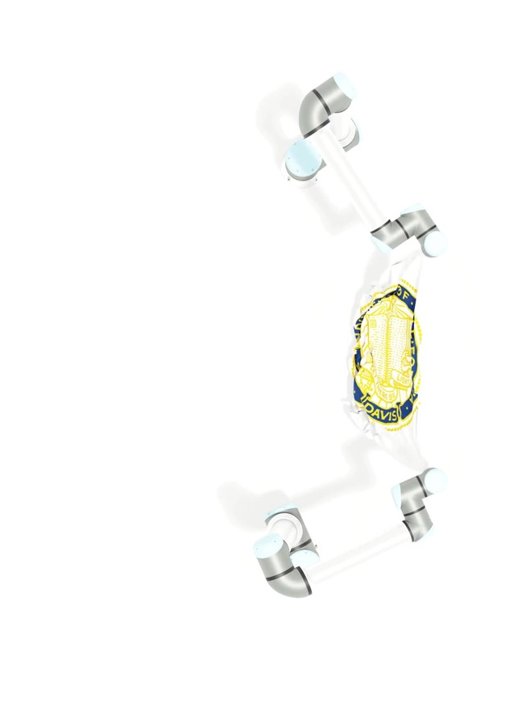

UR10 collaborative robot arms

The lab operates Universal Robots UR10 arms for manipulation research and demos—dual-arm coordination, cloth handling, and other tabletop tasks that support agricultural robotics work.

The lab operates Universal Robots UR10 arms for manipulation research and demos—dual-arm coordination, cloth handling, and other tabletop tasks that support agricultural robotics work.